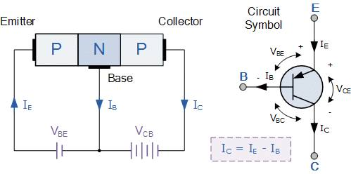

A junction transistor is a three-segment semiconductor device, with the outer segments made of the same type of semiconductor (p-type body) and the middle segment made of the opposite type.
Eg. P-N-P and N-P-N
⩨point contact Transistor : 1947
⩥ K.J.Bardeen and W.H. Brattain
⩨Junction Transistor : 1951
⩥ W. Shockley
